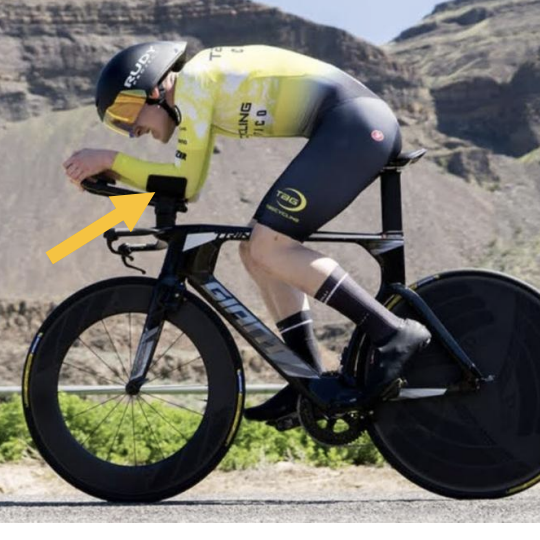
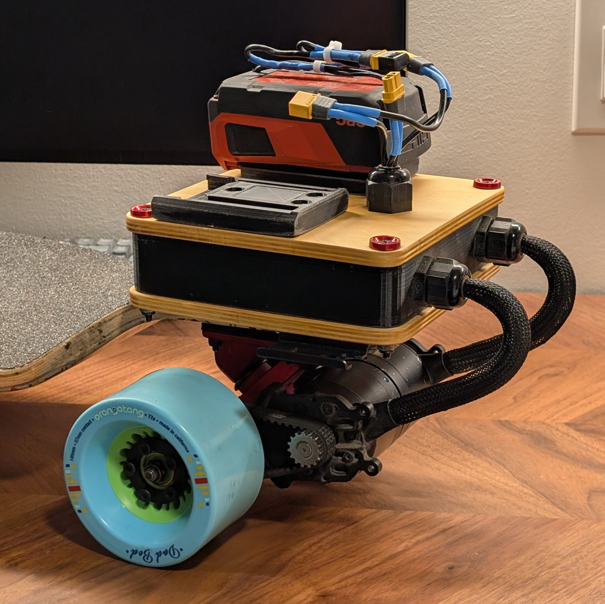
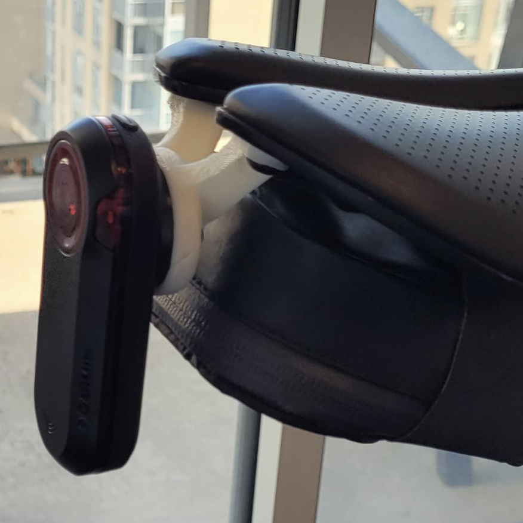
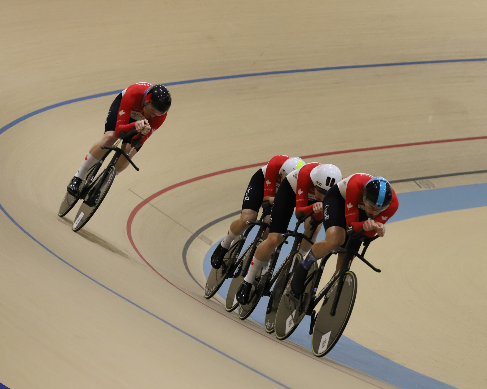
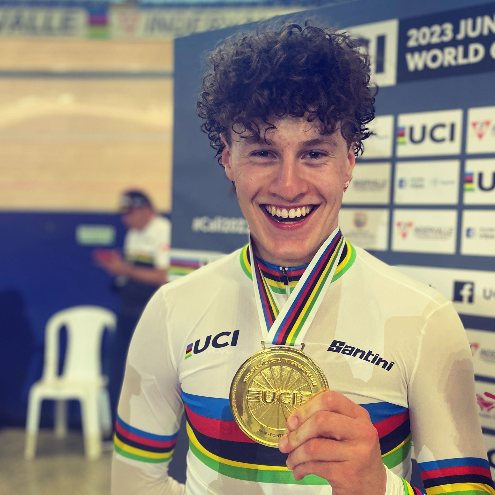

Projects
-

Cycling Time Trial Armrests
Designed custom time trial armrests around personal measurements to maximize control, comfort, and aerodynamics under strict international sporting regulations. The geometry is tuned to strategically detach airflow from the body while providing both linear and rotational adjustment.
The parts were modeled in Autodesk Inventor and manufactured using FDM 3D printing in PLA, with geometry and wall structure optimized around the material's strength limits.
-
 VEX IQ Apple Sorting Robot
VEX IQ Apple Sorting RobotThis VEX IQ project served as my first-semester design project and focused on building a fully automated sorting robot that pushed the limits of the kit's mechanical and software constraints. The system identified and sorted objects by both colour and size, with logic to safely handle out-of-range or unreadable inputs. A presence-detection workflow ensured the robot only processed items when an apple (or test object) was correctly loaded, and additional checks detected when an item fell out or was removed prematurely. A custom bumper-based sizing carriage, driven by a chain-and-sprocket setup, delivered consistent and repeatable measurements despite the limited hardware tolerances in VEX IQ. Several 3D-printed components supported precise alignment and motion where the stock parts were insufficient.
The software emphasized reliability and transparency. All actions, sensor states, and decision paths streamed in real time to a wirelessly connected laptop through continuous console logging, while full data tracking and on-brain display are utilised for direct user interaction. The robot used sensor self-calibration during operation to prevent drift and irregularities in motor control, resulting in consistent performance across many test cycles. An automatic timeout routine protected the battery by safely shutting the system down if left unattended. Overall, the project produced a robust, self-monitoring sorting system that demonstrated careful mechanical design, sensor-validated control, and efficient use of the VEX IQ ecosystem. Programmed in C++.
-

Electric Skateboard Electronics Battery Mount and Housing
Developed a modular, quick-swappable battery housing and electronics mount for an electric skateboard that can withstand rough terrain. The design uses FDM-printed mounts and housing combined with a ¼″ plywood lid and base in a sandwich structure, transferring main tensile loads into bolts rather than into printed parts. Cable glands improve water resistance and aesthetics, while cable sheaths provide additional protection and strain relief. Four through-bolts with nylock nuts allow fast disassembly and maintenance. Modeled and iterated in Autodesk Inventor.
-

Bicycle Seat Light Mount
Created a lightweight taillight mount that positions the light perpendicular to the ground for optimal visibility while keeping clearance for an under-saddle bag. The mount reuses existing hardware and mounting points on the underside of the saddle, minimizing additional components and weight. The part was modeled in Autodesk Inventor and produced with FDM 3D printing in PLA.
Cycling
Top Results
🥈 Silver - 2025 Pan American Championships - Team Pursuit
🥉 Bronze - 2024 Pan American Championships - Team Pursuit
🥇 World Champion - 2023 Junior World Championships - Points Race
🥉 Bronze and Canadian Record - 2023 Junior World Championships - Team Pursuit
About
I am a Mechatronics Engineering student at the University of Waterloo and a Canadian National Team track cyclist. I combine hands-on mechanical design with high-performance sport, using prototyping, CAD, and data to solve practical problems on and off the bike. I am particularly interested in the aerospace industry.
My interests include cycling, mechanical design, robotics, and control systems. I enjoy taking projects from concept to functional prototype, with a focus on real-world constraints like manufacturability, durability, and sporting regulations.